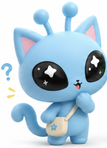
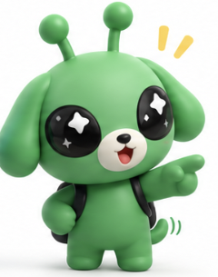

PPT를 만들기 전에 장마다 들어갈 글을 정리한 1차 구성안입니다. 5~6장은 두 곳의 밸류체인, 7장은 비교 초안, 8장은 함께 정한 수익화 방향(알리기 → 팔기 → 잇기)으로 채웠습니다.
도입 01–02
01
표지
작성
순환형 축제 기획 AI 에이전트 — 대구 사투리 축제
부제: 진행 상황 공유와 마스코트 수익화 모델 비교
팀명 / 발표자 / 발표일
대키미·외지몽이 함께 있는 이미지를 오른쪽에 크게.
02
우리의 목표는 그대로 — 순환형 축제 기획 에이전트
작성
매년 기획하고, 결과를 쌓아, 다음 해 기획에 반영한다.
기획 조건 확인→자료 조사·문제 정의→기획안 작성→축제 운영→성과 분석·차년도 과제↺다음 해 기획의 입력
3대 핵심 프로그램(사투리 토론 대회 · 10미 포장마차 · 소상공인 플리마켓)은 매년 유지
연도별 콘텐츠는 새로 기획하고, 결과는 연도 폴더에 쌓아 담당자가 바뀌어도 이어지게
결정과 외부 연락·계약은 사람이, 근거 정리와 초안은 에이전트가
"지난 발표 이후로도 목표는 같습니다. 한 번 기획하고 끝나는 게 아니라, 해마다 결과를 쌓아 다음 해를 더 잘 기획하는 순환형 에이전트입니다."
현재 위치 03
03
에이전트를 만드는 전체 단계와 지금 위치
작성
메인 지침서 하나를 중심으로 로직을 먼저 세우고, 파트별로 만들어 마지막에 통합한다.
STEP 0메인 지침서 보완 (v1 → v1.1): 목적, 성공 기준, 공간 배치, 마스코트 IP까지 구체화완료 · 초안
STEP 1전체 작동 로직 세부사항 확정: 입력 정보 → 데이터 수집·분석 → 기획 결과물진행 중
STEP 2기능별 PART 세분화: 파트마다 역할·필요한 정보·결과물 구분예정
STEP 3PART별 데이터베이스 + 개별 에이전트 + 파트 지침서 구축 — 마스코트 파트를 먼저 진행 중일부 착수
STEP 4개별 에이전트 통합·검증: 하나의 방문객 동선과 메인 지침의 성공 기준으로 점검예정
계단형 5칸, 현재 위치(STEP 1 · STEP 3의 마스코트 파트)에 표시.
"지금은 전체 로직을 다듬으면서, 축제에서 해마다 계속 쓸 마스코트 파트를 먼저 구체화하고 있습니다. 오늘 발표의 나머지는 이 마스코트 파트 이야기입니다."
지난 시간에 배운 것 · 리서치 기반 경쟁사 비교 04–08
04
원페이지란, 그리고 왜 마스코트 수익화인가
작성
축제에서 매년 이어 쓸 마스코트를 어떻게 돈이 되는 자산으로 만들지, 두 가지 모델을 비교했다.
원페이지 — 한 장으로 보는 기업 분석
구역
보는 것
A. 사업 모델
누구에게, 무엇을, 어떻게 전달, 핵심 자원, 파트너
B. 재무
매출·성과 지표 (단독 숫자가 없으면 간접 지표)
C. 최근 동향
최신 보도자료·뉴스
D. 산업·이슈
산업 구조, 이슈, 미확인 목록
왜 마스코트 수익화를 골랐나
마스코트는 축제가 매년 바뀌어도 계속 남는 자산 → 순환형 축제를 이어 가는 수익원
우리 캐릭터는 두 성격을 다 가짐
공공기관 캐릭터처럼 지역 홍보·지역 업체 협업
사기업 캐릭터처럼 굿즈·콜라보·라이선스로 수익
그래서 공공 1곳, 사기업 1곳을 각각 원페이지로 조사하고, 이를 밸류체인 맵으로 발전시켜 소개
왼쪽 원페이지 A·B·C·D 구역 도식, 오른쪽 "공공 + 사기업" 두 갈래 화살표가 우리 캐릭터로 모이는 그림.
"지난 시간에 리서치로 경쟁사를 비교하는 원페이지 만드는 법을 배웠습니다. 저희는 이걸 축제 마스코트의 수익화 모델을 찾는 데 썼습니다."
05
밸류체인 ① 사기업 — 카카오프렌즈 캐릭터 IP
작성
캐릭터 하나로 기획부터 체험 공간까지 다섯 단계를 전부 돌린다. 돈은 콜라보·라이선스에서 들어오지만, 정산 숫자는 공개되지 않았다.
1. 인바운드
a1IP 세계관·파생 캐릭터 기획
a2상표권·디자인권 확보
카카오(IP 기획 조직)
2. 운영·제작
b1이모티콘·콘텐츠 제작
b2직판 굿즈 제작
b3콜라보 상품 공동 제작
GRS 인증 제조사 · 콜라보 파트너
3. 아웃바운드
비용기회 c1자사+외부 채널 동시 출시
c2해외 마스터 라이선스 유통
c3금융·뷰티 라이선스
c4호텔 공간 라이선스
유통채널 · 해외 라이선시 · 금융·뷰티 파트너
4. 마케팅·판매
d1콜라보 프로모션(해리포터 등)
병목 d2스포츠 콜라보 완판(KBO)
병목 d3식품 라이선스 판매(춘식이우유·맥심)
콜라보 IP 보유사 · KBO · 식품 라이선시 · 소비자
5. 서비스
e1홍대 플래그십 운영
e2지역 투어 운영(부산)
e3호텔 체험 패키지
플래그십 운영팀 · 부산 수영구청·관광공사 · 호텔 파트너
돈 흐름 · 소비자 → 원천(카카오·제작)
콜라보 로열티: 비율 미공개 [I]
KBO·식품 라이선스료: 금액 미공개 [U]
데이터 흐름
완판·콜라보 성과 데이터 — 보유자 카카오 [I]
투어 참여 규모 — 보유자 부산관광공사 [확인·원문미확인]
병목대기·지연(완판형)비용중간 차감이 겹침기회AI로 풀 수 있는 지점[I] 해석 · [U] 미확인
이 맵에서 읽은 것
병목 d2·d3 — 콜라보 상품이 완판될 만큼 수요가 공급보다 앞선다
비용·기회 c1 — 여러 채널에 동시 출시하면서 중간 차감이 겹치고 같은 정보를 채널마다 다시 입력한다 → AI로 줄일 수 있는 지점
숫자 공백 — 로열티·라이선스료 등 정산 구조 숫자는 원페이지에도 비공개로 남음
우리 축제에 비춰 볼 질문
대키미·외지몽도 축제 굿즈숍(b2)에서 콜라보·라이선스(c·d)로 넓힐 수 있나?
부산 지역 투어(e2)처럼 지자체와 묶는 체험형 서비스는 공공 모델과 겹치는 부분 → 6장에서 비교
다섯 단계 열 + 이해관계자 줄 + 돈(굵은 주황)·데이터(파란 점선) 흐름. PPT에는 원본 맵(1280×720)을 그대로 캡처해 넣으면 됨.
"지난 시간 원페이지를 한 단계 더 발전시켜 밸류체인 맵으로 그렸습니다. 카카오프렌즈는 캐릭터 하나로 기획·제작·유통·판매·체험까지 전부 돌리고, 병목은 완판되는 콜라보, 비용과 기회는 여러 채널 동시 출시에 있었습니다."
근거: 03_onepager_v1.md(현희 브랜치) · valuechain_v2/signals.md · 확인 2026-11-07
06
밸류체인 ② 공공 — 대전 꿈돌이&꿈씨 패밀리
작성 · 팀 확인 대기
IP는 관광공사가 쥐고, 돈은 지역 판매처에서 나온다. 결산은 공개되지만, 그 데이터가 다음 기획으로 돌아가는 고리는 확인되지 않았다.
① 트렌드·타깃 인사이트
대전 근거 없음 [U] 조사 주체·활동 모두 미확인
기회 O1 트렌드·밈 → 연도 주제 후보 [I] · 보류
유형 모두 이름 [U] · 관광객 겨냥만 확인
② IP 콘텐츠 제작
IP 일체 보유·콘텐츠 운영(이름 공모·꿈씨기자단)
라이센싱 플랫폼 — 상업 사용 신청·계약
우리술협동조합 공동브랜딩(전통주 100일의 꿈)
병목 B1 상업 사용 신청 재개 대기
기회 O2 ★ 우선 사투리 변환기·고사·숏폼 생성 [I]
팀 자산 대키미·외지몽 IP · 세계관 · IP 가이드
대전관광공사 · 라이센싱 플랫폼(운영 주체 [U]) · 우리술협동조합 · 상업 사용 기업(이름 [U]) · (꿈씨기자단)
③ 캠페인·참여
꿈돌이 페스타 · 이름 공모
시식회·포토존·경품
비용 C2 현장 조형물 제작설치
대전관광공사 · 홍보대사(유튜버, 이름 [U]) · 참여 관광객 · (대전시 — 0시 축제)
④ 커머스 전환
홍보관·꿈돌이하우스·공공판매처 판매
꿈씨상회 팝업(롯데백화점 대전점)
지역 기업 협업 상품 제조
병목 B2 식음료가 관광지 중심 판매 구조에 묶임
비용 C1 홍보관 상품 매입·재고
대전시 · 롯데백화점 대전점 · 지역 기업 · 판매처 묶음(중복 [U]) · 관광객
⑤ 데이터 환류
상품판매수익 → 공사 결산 → 클린아이 경영공시
⑤ → ① 차년도 반영 [U] — 환류 체계 근거 없음
기회 O3 판매·참여 데이터 → 판정 [I] · 지금은 어려움
대전관광공사 · 클린아이 · 분석·개선 주체 [U]
돈 흐름 · 관광객 → 판매처 → 지역 기업 → 공사
시작점: 관광객 결제 — 상품판매수익 1,085,425,261원 [F]
판매처 → 지역 기업: 상품 매입(매입비 707,339,875원 [F]) / 납품 단가 [U]
끝점: IP 보유자(공사)에게 돌아오는 몫 = IP 수수료 [U 주체·율] · 시 설명 "수익 3배"
부수: 라이센싱 상업 사용료 [U]
데이터 흐름
IP 사용 신청·계약 — 공사
SNS 인증·시식회 참여 — 보유자 [U]
구매자·팬 데이터(앱·멤버십) — 확인 안 됨 [U]
판매 결산 — 공사 · 클린아이 공시 [F]
병목B1·B2비용C1·C2(결산 수치 있음)기회O1~O3, 우리 쪽 가설팀 자산② 단계[F] 원문 사실 · [I] 해석 · [U] 미확인
이 맵에서 읽은 것
병목 — ② 상업 사용 신청이 재개를 기다리는 중이고, ④ 식음료는 관광지 중심 판매 구조에 묶여 있다
비용 — 홍보관 상품 매입·재고(C1), 캠페인 조형물 제작설치(C2): 공공이라 결산 수치가 공개됨
공백 — ①과 ⑤ 단계가 비어 있다. 전담 조직·중장기 로드맵이 없다는 외부 지적
우선 기회 O2 — 왜 우리에게 맞나
사투리 변환기·사투리 고사·숏폼 생성 (영향 7 · 실현 7 [I])
대전은 ② 단계에서 신청 재개를 기다리지만, 우리는 대키미·외지몽 IP를 직접 보유
근거: 팀 프롬프트 6개 + IP 가이드, 사투리를 처음 접하는 외지인의 낯섦과 바로 연결
5단계 열 + 이해관계자 + 돈(주황)·데이터(파란 점선) + 마커. ② 단계는 팀 자산 틸 색. PPT에는 원본 맵(1280×720)을 캡처해 넣으면 됨.
"두 번째는 공공 캐릭터인 대전 꿈돌이입니다. IP는 대전관광공사가 갖고, 돈은 홍보관과 팝업 같은 지역 판매처에서 나옵니다. 공공기관이라 결산 수치는 공개되지만, 판매 데이터가 다음 기획으로 돌아가는 고리는 확인되지 않았습니다. 그래서 저희는 IP를 직접 가진 강점을 살려 사투리 콘텐츠 생성을 우선 기회로 잡았습니다."
근거: valuechain_v1.md · analysis_v01.md · signals_v02.md (kimseunghee 브랜치, 2026-11-08) · "제안 적용, 팀 확인 대기" 판
07
두 밸류체인 비교 — 공통점과 차이점
초안 · 함께 확인
둘 다 캐릭터 하나를 여러 상품과 공간으로 펼치지만, 사기업은 넓게 팔고, 공공은 지역 안에서 알린다.
공통점
캐릭터 IP 하나를 제작 → 협업 상품 → 판매 → 체험 공간으로 펼친다
협업으로 상품을 늘린다 — 카카오 콜라보(KBO·식품) / 대전 지역 기업 협업 상품·우리술 공동브랜딩
오프라인 공간·지역과 묶는다 — 카카오 홍대 플래그십·부산 투어 / 대전 홍보관·꿈씨상회 팝업
IP 보유자에게 돌아오는 몫(로열티·IP 수수료율)은 둘 다 공개되지 않았다 [U]
우리에게 주는 신호
캐릭터는 "만드는 것"보다 "어디까지 펼치느냐"에서 돈이 된다 [해석]
정산 숫자가 없으니, 우리 수익 모델의 숫자는 가설로 두고 검증해야 한다
차이점
구분
사기업 · 카카오프렌즈
공공 · 대전 꿈돌이
IP 주체
카카오 IP 기획 조직 단독
대전관광공사 보유 + 대전시·지역 기업 협업
목적
IP 수익 확대 [해석]
지역 관광·홍보, 수익은 공사 결산 [해석]
펼치는 범위
해외 라이선스 · 금융·뷰티 · 호텔까지
대전 안 홍보관·관광지·팝업 중심
병목
완판 — 수요가 공급보다 앞섬
상업 사용 신청 재개 대기 · 관광지 중심 판매 구조
공개된 숫자
정산 숫자 없음
공공기관 결산 공시로 매출·매입비 공개
데이터 환류
완판·콜라보 성과 데이터를 카카오가 보유 [I]
결산만 확인, 다음 기획으로 돌아가는 고리 근거 없음 [U]
왼쪽 공통점, 아래 비교표. 두 맵의 단계 이름이 다르다는 점도 한 줄로 밝힐 것 — 카카오는 일반 5단계(인바운드~서비스), 대전은 팀 5단계(트렌드~데이터 환류).
"두 곳 모두 캐릭터 하나를 상품과 공간으로 넓혀 갑니다. 다만 카카오는 해외·금융·호텔까지 넓게 팔고, 대전은 지역 안에서 관광과 홍보를 위해 씁니다. 그리고 둘 다 캐릭터 주인에게 얼마가 돌아가는지는 공개되지 않았습니다."
08
우리 수익화 모델의 방향성
작성 · 팀 논의 2026-11-09
사투리 콘텐츠로 먼저 알리고, 지역과 함께 팔고, 데이터로 다음 해를 잇는다.
1 · 알리기콘텐츠 먼저 — 사투리 변환기·사투리 고사·숏폼·이모티콘으로 대키미·외지몽을 먼저 알린다. 우리는 IP를 직접 갖고 있어 바로 시작할 수 있다 (대전 우선 기회 O2)사기업형
2 · 팔기지역과 함께 — 10미 포장마차·7구 맛집·플리마켓 업체와 캐릭터 공동브랜딩 먹거리·패키지, 굿즈숍 1부스, 대구시와 팝업·홍보공공형
3 · 잇기데이터 환류 — 콘텐츠 참여·판매 데이터를 성과 분석(05)에 넣어 다음 해 기획의 입력으로 쓴다. 두 맵 모두 비어 있던 고리를 우리 에이전트가 채운다우리 차별점
캐릭터 사용 신청이 막히는 병목 (대전 B1) → 부스 업체용 캐릭터 사용 규칙을 IP 가이드(9장)로 미리 정함
아직 가설인 것
수수료·로열티 비율 — 두 곳 모두 비공개라 첫해에 직접 측정 [가설]
콘텐츠 반응이 구매로 이어지는 비율 — 축제 데이터로 확인
세 단계 화살표(알리기 → 팔기 → 잇기), 3단계에서 2장 순환 고리로 되돌아가는 화살표. 아래 "가져올 것" 표.
"두 곳을 비교해 저희 방향을 정했습니다. 먼저 사기업처럼 사투리 콘텐츠로 캐릭터를 알리고, 공공처럼 축제 부스 업체·대구시와 함께 상품을 팝니다. 그리고 두 곳 모두 비어 있던 데이터 환류를 저희 순환형 에이전트가 채워서, 올해 성과가 다음 해 기획으로 이어지게 만듭니다."
캐릭터 지침 09
09
원페이지 전에 먼저 정한 캐릭터 지침 — 대키미·외지몽 IP 가이드
작성
표현이 달라도, 친구가 된다.

대키미 · 고양이 외계인대구 토박이 · 설명하는 친구자신만만 · 허당미 · 서툰 다정함

외지몽 · 강아지 외계인우주에서 온 여행자 · 질문하는 친구호기심 · 솔직함 · 재도전
고정 (매년 그대로)
이름, 종, 기본 디자인, 몸 색상 (대키미 #6DCFF5 · 외지몽 #008C3A)
귀·꼬리·더듬이 2개·신체 비율
성격, 세계관, 두 캐릭터의 동등한 친구 관계, 핵심 메시지
확장 (연도·축제별로 바꿈)
의상, 액세서리, 소품, 배경, 포즈
축제별 상황과 연도별 에피소드
축제 포인트 색상은 의상·소품에만, 몸에는 적용 금지
세계관: 우주를 여행하던 외지몽이 대구의 낯선 신호를 따라 와서 대키미의 사투리를 배우고, 티격태격하다 친구가 됨
AI 제작 규칙: 금지 사항 12개, 결과물 검수 체크리스트, 모든 작업 앞에 넣는 마스터 프롬프트 1개 + 작업별 프롬프트 5개(축제 기획·이미지·영상·굿즈·SNS)
수익화와의 연결: 캐릭터는 고정해 IP 가치를 지키고, 굿즈·콘텐츠는 매년 확장해 수익원으로 씀
위쪽 핵심 메시지와 두 캐릭터, 아래쪽 고정/확장 두 칸 대비.
"수익화 모델을 비교하기 전에, 먼저 캐릭터 자체의 기준을 지침으로 정해 두었습니다. 캐릭터는 바뀌지 않고, 캐릭터가 겪는 상황과 축제 콘텐츠만 해마다 확장합니다."
마무리 10
10
정리 · Q&A
작성
목표: 매년 결과를 쌓아 다음 해를 기획하는 순환형 축제 기획 에이전트
현재: 메인 지침서 보완 완료, 전체 로직 정리 중, 마스코트 파트부터 구체화
마스코트: 캐릭터 지침을 먼저 세우고, 공공·사기업 밸류체인 비교로 수익화 방향(알리기 → 팔기 → 잇기)을 정함
세 줄 요약 + 대키미·외지몽 이미지.
근거: 팀 「기본 지침 v1.1 (초안)」의 마스코트 IP 가이드, 원격 브랜치의 원페이지 파일(hyunhee lifestyle_research/company/03_onepager_v1.md, kimseunghee Daegu Mascot Lifestyle/research/company/대전 꿈돌이&꿈씨 패밀리/onepager.md).